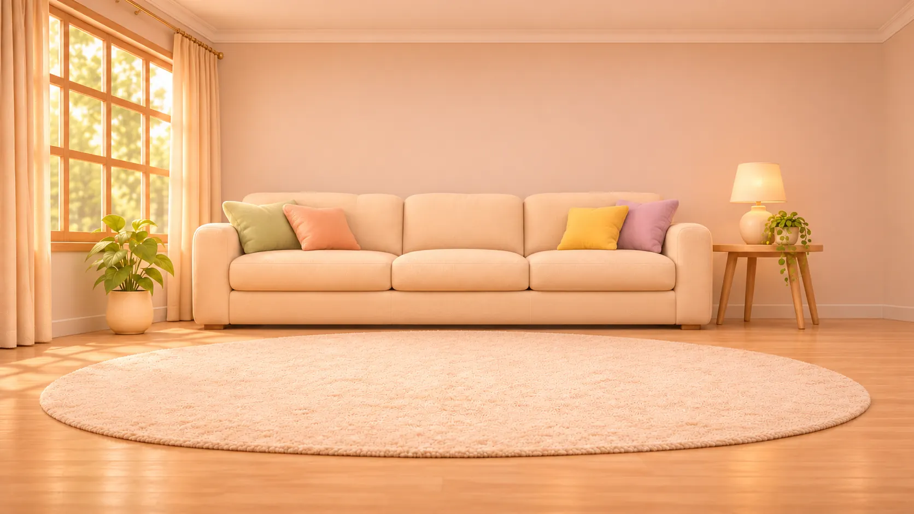
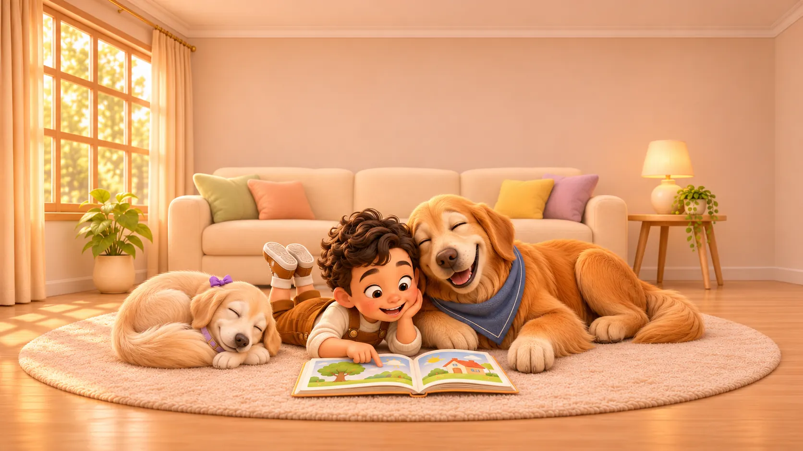
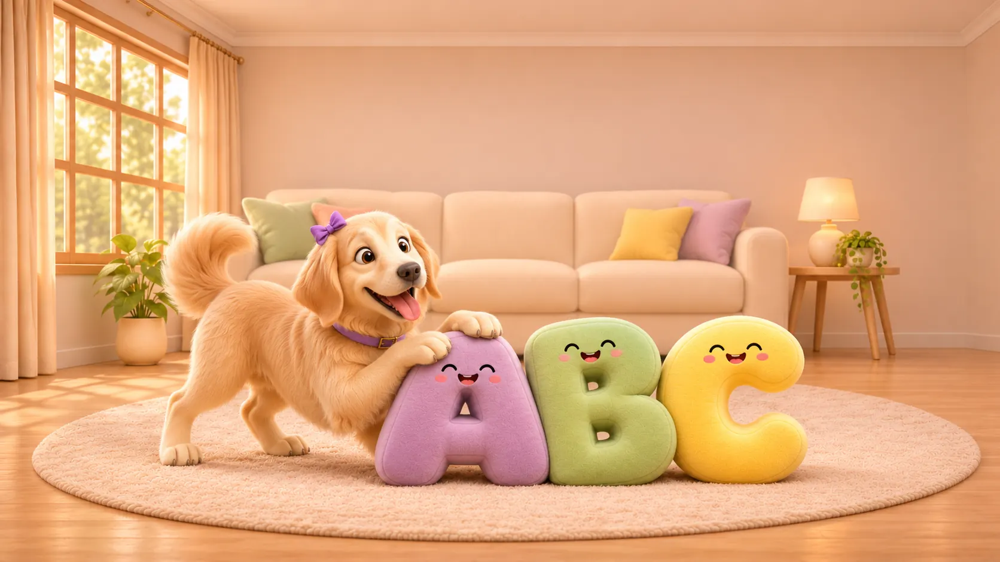
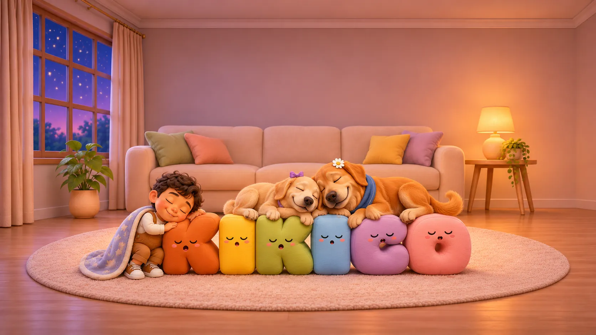

Mini Mundo do Kikico
Desenhos longos e calmos para a família que precisa de 15 minutos sem culpa.
Quem mora nessa sala
Kikico
Tem 2 anos e quer saber de tudo: rodas, bichos, chuva, o feijão que brota. Puxa os carrinhos por um barbante.
Nina
A cachorrinha sempre acesa, de lacinho lilás. Corre na frente e volta para ver se todo mundo vem junto.
Tião
O grandão de bandana. Desengonçado e sem pressa: deita, espera, observa. É quem ensina a calma.

O que é um desenho calmo
- Planos longos. A imagem fica parada o tempo de a criança olhar de verdade.
- Som baixo e sem susto. Nada de grito, buzina ou efeito estourando.
- Histórias do dia a dia. Passear, esperar, plantar, comer junto.
- Começo, meio e fim. E, no fim, um convite para desligar e brincar.
Para você, que cuida. Às vezes a gente precisa de quinze minutos para o jantar, o banho ou um respiro. Fizemos um desenho para esse tempo: ritmo lento, som baixo e nada de cortes rápidos.
Episódios
Episódios novos aos sábados de manhã. Cada história acontece num mini-mundo da família.
-
Episódio 1 · estreia em 28 de novembro
Vila das Rodas
Kikico passeia com Tião e Nina e conhece os carrinhos de madeira que moram lá, como a Dona Lila.
-
Em breve
A Fazenda
Bichos, terra molhada e o tempo devagar do campo.
-
Em breve
A Casa dos Avós
Colo, mesa posta e as histórias de quem chegou antes.

Abecedário de Virtudes
Cada letra traz uma virtude, descoberta num gesto pequeno, sem sermão. A história termina com uma quadrinha cantada.
- AA de Amizade
- PP de Paciência
- OO de Obediência
- GG de Gratidão
- ZZ de Zelo

Onde assistir
Episódios longos no YouTube. Pedacinhos e conversa com os pais no Instagram.